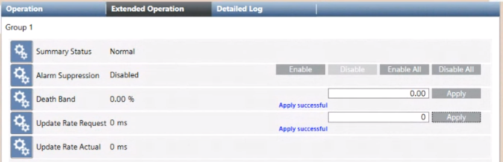

Properties and Commands of an OPC Group
When you select an OPC group, the Extended Operation tab displays its properties and commands.

Property | Description | Commands |
Summary Status | Highest priority status that is currently active for an object. | - |
Alarm Suppression | When this feature is enabled on specific system objects, any alarms coming from those objects are suppressed in the Desigo CC station. |
|
Death Band | Determines the deadband smoothing for analog items in the group expressed as percentage. |
|
Update Rate Request | The update rate requested by the server for the group expressed in milliseconds. |
|
Update Rate Actual | Actual update rate guaranteed by the server expressed in milliseconds. | - |